谷歌发表官方声明之后，网民在谷歌中国总部“非法献花”
老羊调查系列（3）
深度调查|为什么我们不能访问谷歌？
by 长沙杨飞
先说个小事吧。我的外甥女每次从新加坡回中国度假都要抱怨上网难。我家是光纤到户，网速如飞，当然她抱怨的不是速度，而是很多网站不可访问，尤其是她做作业要用的谷歌Google以及联系同学用的脸书Facebook。
在中国大陆无法正常访问的网站很多，除了世界最大搜索引擎谷歌Google、世界最大社交平台脸书Facebook以及推特Twitter，还有世界最大的财经网彭博社Bloomberg、世界最大视频网YouTube、世界最大图片分享平台Instagram、世界著名大报纽约时报New
York
Times，时断时续（部分屏蔽）的还有世界最大百科全书维基百科Wikipedia、世界著名电台BBC中文网，以及英国《金融时报》、美国《华尔街日报》等等。据不完全统计，前后被中国政府屏蔽的网站在两千个以上，维基百科词条“中华人民共和国被封锁网站”就列出了数百个，涵盖政治、经济、文化、邮箱、图片、视频、云存储等等方面，涉及国际互联网几乎所有门类，而且主要是业内领先的大型网站。
谷歌发表官方声明之后，网民在谷歌中国总部“非法献花”
很多海龟以及初到中国的外国人对此很抓瞎，这么多主流网站和手机App都不能用，来到中国就像来到了国际互联网的孤岛，立马与世界失去联系，无奈只得翻墙。翻墙是一件闹心的事，一是网速严重减慢，二是VPN等工具得时时更新，费力费钱。
抓瞎的不限于老外，所有需要从被封网站获取信息的国人，包括教师、学生、记者、科研人员、外贸和金融从业人员等等，都被逼天天操练翻墙大法，工作和生活严重受阻。中国大陆对网络的封锁还在逐渐升级，2014年对谷歌邮箱Gmail的彻底封锁导致上千万中国用户无法收发邮件，用户一片哀嚎，尤其是外贸从业人员和申请读国外学校的同学们。
需要重点指出的是，虽然全中国有超过4亿人使用（谷歌开发的）安卓Android智能手机，但中国政府封锁了谷歌的手机应用商店Google
Play，全国几亿智能手机用户无法安装官方手机软件，加剧了盗版软件和手机病毒的泛滥。凡此种种，不胜枚举。应该说，中国的网络封锁已经严重影响了国民生产和人民生活。
奇怪的是，我怎么也找不到这些网站被封锁的具体原因，中国政府只是笼统地说这是“依法管理互联网”，但这些网站具体违反了哪条法律，以及是如何危害国家安全的，一律无可奉告。无奈我只得自己找原因。被屏蔽的网站太多，让我们先从几个大的说起。
一，谷歌篇
首先说Google谷歌，地球上最大的互联网公司，其搜索、视频、地图、邮箱等业务量均为世界第一，全球70%以上的智能手机使用谷歌开发的安卓操作系统。这是一头真正的网络大鳄。
1，大鳄翻脸
谷歌是2006年正式进入中国的，到2009年底，谷歌已经占据了中国互联网搜索流量的三分之一，赚得盆满钵满。然而2010年1月12日，谷歌突然在官方博客发表声明《A
New Approach to China》，称遭到黑客攻击（并暗指黑客来自中国政府），公司决定从即日起，不再按中国政府的要求对搜索结果进行审查。
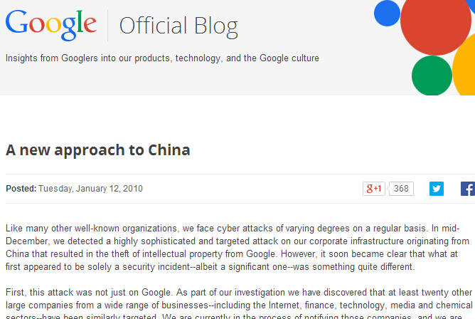
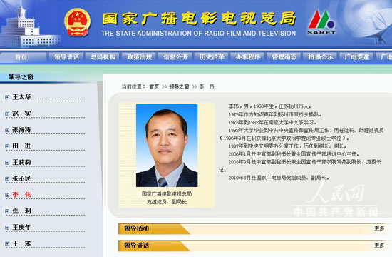
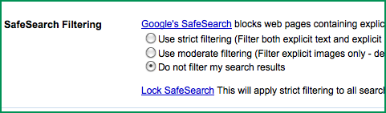
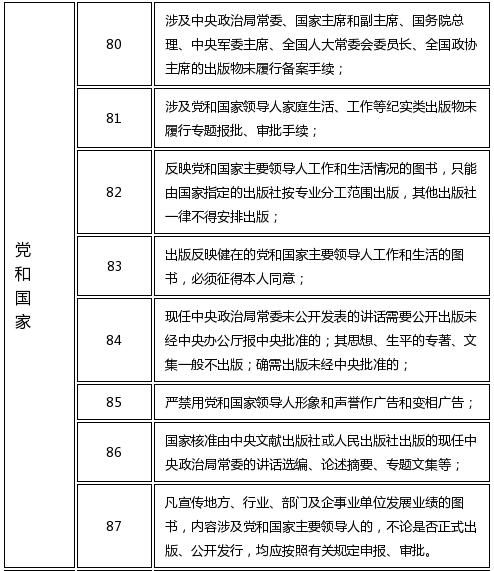
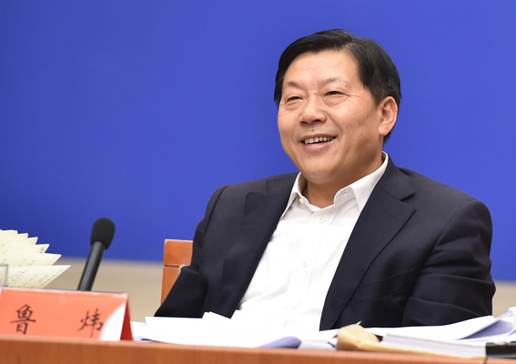
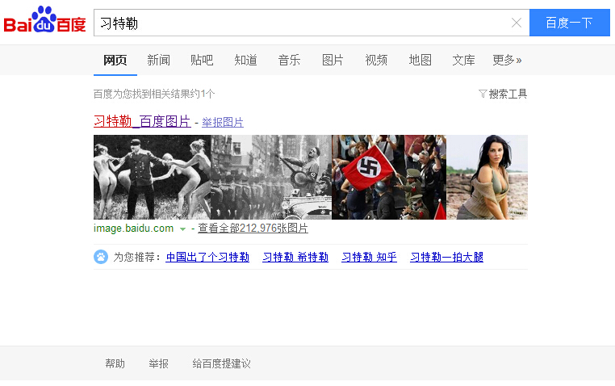
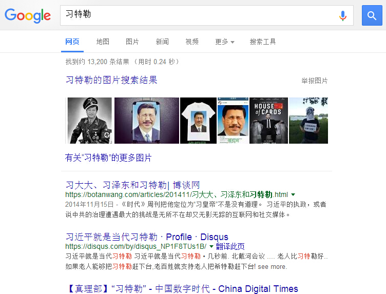
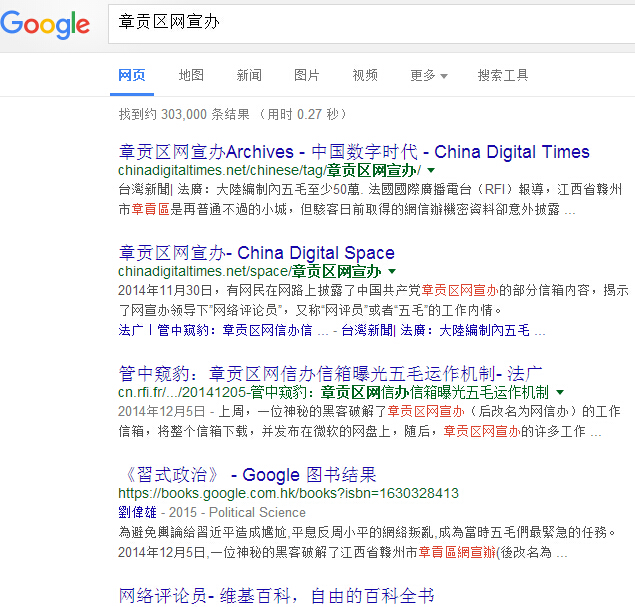
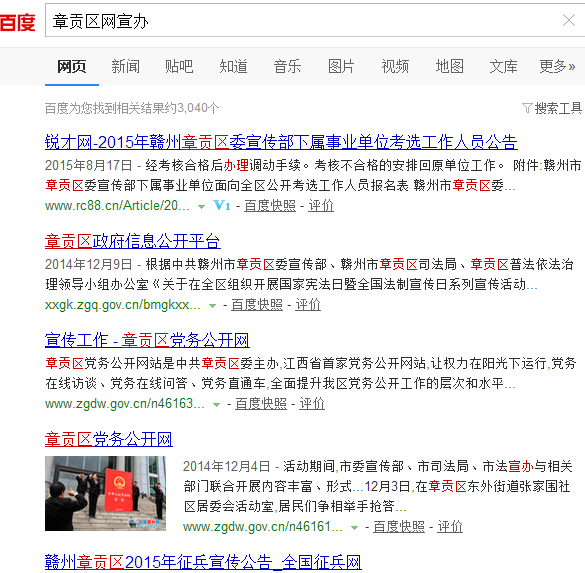
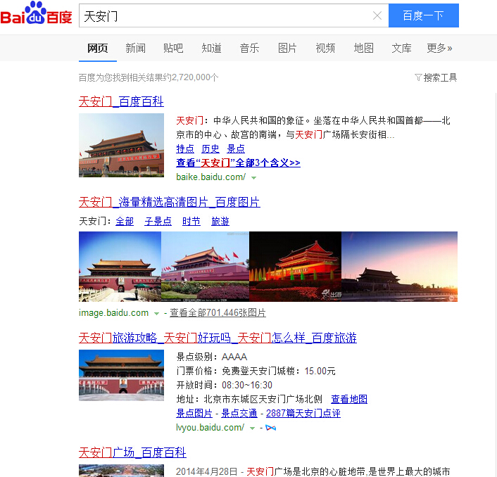
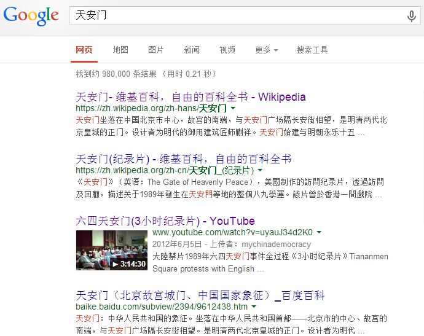
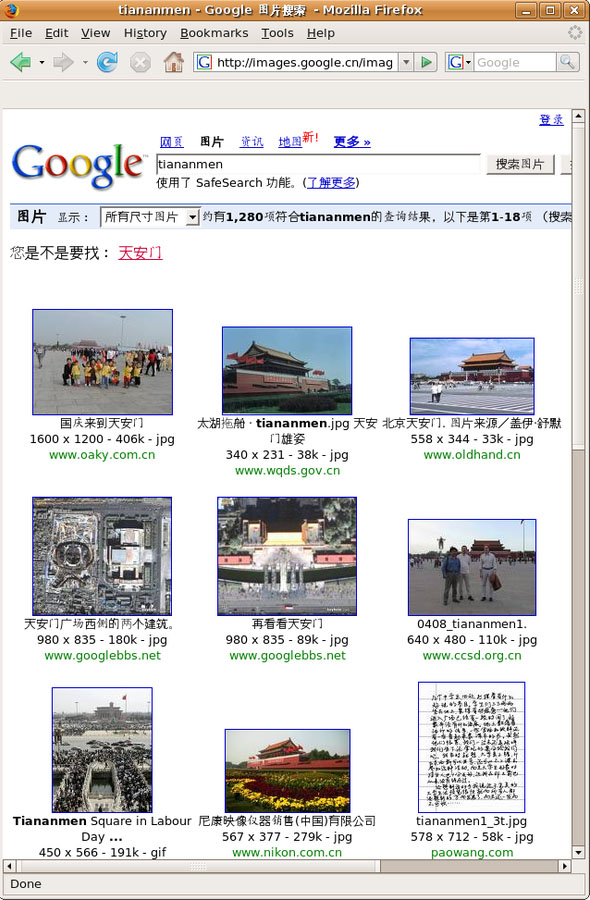
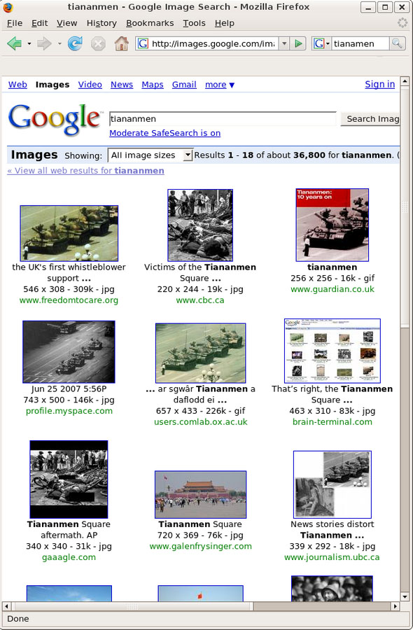
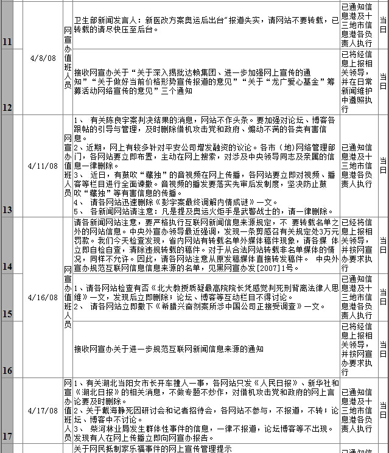
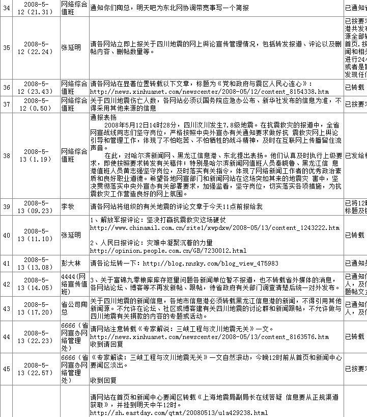
江泽民和华莱士北戴河访谈
根据我查到的资料，这是中国最高领导人首次就网络审查公开表态。“限制对中国发展无用的信息”这个表述很抽象，实际的情况是，哪些信息对中国的发展无用其实全凭某人一句话。后面我们将看到中国的网络管制基本都是人治，和法制一点都挂不上边。让我们回头再看看原中宣部副秘书长李伟的那句话：“。。我反对什么，我就封什么”，这句话和江总书记其实是一个意思，只是李伟说得更直接一些。
6，网络屏蔽案例分析
从江泽民、胡锦涛到今天的习近平时代，中国政府对互联网的管制没有一点放松的迹象，而是越来越严厉。前面的《六四天安门》纪录片就是一例，只要这个片子还出现在YouTube里面，YouTube在中国大陆就别想正常访问。同理也适用于Facebook和Twitter，只要上面有中国政府不满的内容，这些网站就别想在中国生存。一句话，中国政府要求各大网站必须100%服从官方指令。
《六四天安门》这个片子是1989年的老黄历了。我们来看最近的几个案例。2014年10月21日，中国政府封杀了方舟子的博客、微博和微信公众号，一夜之间方舟子就从（中国大陆的）互联网上消失了。中国政府这次封杀方舟子，和以前封杀清华大学社会学教授郭于华、北京大学宪法学教授张千帆等等的手法一样，既不通知也不审判，而是偷偷干掉，全国整齐划一，行动非常迅速。
方舟子这次突然被屏蔽，原因大家都知道，就是因为他批评了一个名叫周小平的“网络作家”。周小平先写了一篇文章《梦碎美利坚》，列举了美国的种种不是。这篇文章有诸多硬伤，有些证据基本属于捏造。曾在美国生活多年的方舟子看不下去了，于是专门撰写了一篇长文《“网络作家”梦游美利坚》，指出周小平的诸多错误。
文人之间的论战我们见得多了，为什么这次国家机器要参与其中呢？其原因就在方舟子被封杀的前几天。2014年10月15日，国家主席习近平在北京主持召开文艺工作座谈会，邀请了72位文艺界名人参加，周小平和花千芳作为网络作家的代表参加了座谈。座谈会结束时，习近平还走到他们面前，亲切地说：“希望你们创作更多具有正能量的作品。”
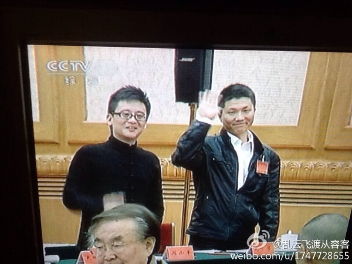
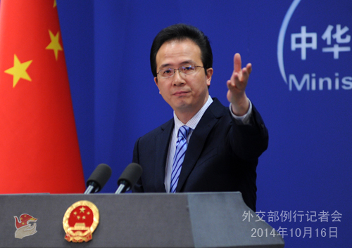
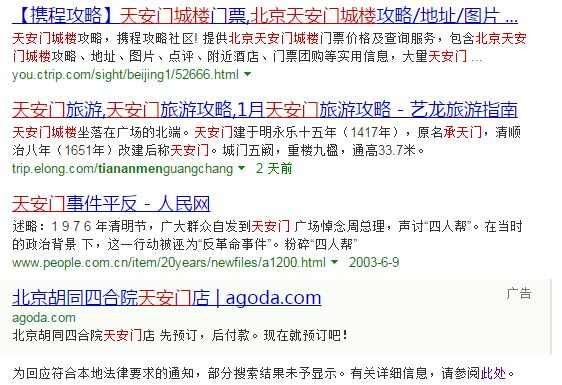
黑色法拉利车毁人亡现场（网页截图）
两年多之后，2014年12月，随着全国政协副主席（前中共中央办公厅主任）令计划被隔离审查，法拉利事件又重新可以搜索了。现在大家都知道，那辆黑色法拉利的驾驶员是令计划的儿子令谷。
24岁的令谷是北京大学在读研究生，他这辆价值超过五百万元的法拉利跑车从何而来呢？这事要追溯开来，令计划当然会受牵连。所以，令计划在车祸当晚即动用了中央警卫局封锁事故现场，第二天又利用职权禁止媒体报导，并指示有关部门对互联网进行全面屏蔽，包括“法拉利”在内的诸多词汇立即变成了敏感词。
这种互联网审查既不合理也不合法。事实很明显，为了一己私利，有高级公务员在利用职权屏蔽互联网，屏蔽和自己有关的负面事件。假如谷歌的简体中文搜索2014年还在中国运转的话，按照谷歌公司的惯常做法，紧急屏蔽“法拉利”显然是其不能接受的。
10，谁是“老干部”？
谈到这里我们回头来看看原中宣部副秘书长李伟的那段话，他强调了中国互联网审查的两个原则：“。。一要表明态度，我反对什么，我就封什么，这是意识形态上的表态；二是要向老干部们表态，要表明我们没忘本，我们在维护声誉。”
哪些人是李伟所谓的“老干部”呢？令计划当然是其中一个，薄熙来、周永康、徐才厚等等显然都在其列。有人说中国的腐败问题，根子就在主席台的前三排，这话一点也不夸张，在互联网管理方面尤其如此，因为只有主席台就座的高级官员才有屏蔽互联网的权力。
现在的问题是，像令计划和周永康这样利用职权屏蔽互联网的“老干部”们到底有多少？按照官方的说法，贪赃枉法的官员是少数，但是我个人认为，中国的官员已经到了几乎无官不贪的程度，尤以高级官员为甚。前国家主席胡锦涛主席也曾说过，中国的腐败问题已经严重到了将亡党亡国的程度。
我们都知道，这个世界上没有神仙，每个人都会有缺点，都会做错事，无论他是普通老百姓还是高级公务员，亦或党和国家领导人。但中国的政治舞台偏偏就有很多无负面新闻的神仙。在中国，县处级干部还有可能在网上搜出一些负面新闻，厅级干部一般就没啥负面消息，副省级或者候补中央委员级别以上的就更不用说了，个个都高大完美。这种情况很不正常。京东的老板刘强东在2015博鳌亚洲论坛上曾说：“如果一个人在网上一点负面没有的话，他一定是骗子。”
在苏荣、薄熙来、周永康、徐才厚等党和国家领导人被查处之前，他们都和令计划一样，互联网上找不到他们的负面消息。虽然他们一贯贪赃枉法，生活糜烂，但是他们在台面上的形象永远高大光辉，没有任何缺点。
毫无疑问，中国官方屏蔽了很多“老干部”们的负面新闻。国内的网络媒体不敢抗命，但有些国外的网站中国政府鞭长莫及，唯一能做的就是屏蔽这些网站。这种屏蔽当然只能秘密执行，否则老干部们的脸往哪搁？这类例子比比皆是，比如《纽约时报》被屏蔽就是因为刊登了一篇报导，分析中国前总理温家宝的家产。因为篇幅这里就不细说了，请诸位自己搜索David
Barboza和2013年度普利策新闻奖。关于纽约时报事件，我将有另外一篇文章详谈。
前文说过，互联网上有些内容是人类公敌，如恐怖主义、种族歧视、儿童色情、制毒贩毒等等，中国政府公开屏蔽这些网站的细节不会有问题，但因为有令计划这样的“老干部”们在互联网管理中夹带私货，屏蔽自己的丑闻，使得中国的的互联网管理全都被迫秘密进行，没有任何机构站出来公布被屏蔽的网站名单或者被过滤的敏感词汇表。
为了保障少数“老干部”们的利益，中国政府采用黑箱操作的手段进行互联网管制，美其名曰依法治国，这种行为损害了法律的名声，干扰了人民的生活，阻断了信息传播，损害了企业的生产，也严重影响了中国的国家声誉。不夸张地说，这些老干部们名为公仆，实为国贼。
一个政府管理互联网，出发点不是国计民生，而是维护“老干部们”的声誉。这实在神奇。他们利用职权控制互联网舆论，禁止曝光他们的家产，禁止报导他们的丑闻，对搜索引擎进行敏感词过滤，并屏蔽相关国外网站，至于对老百姓的生活以及企业的经营有啥冲击，都不在他们的考虑范围之内。
不仅如此，他们还动用公检法严厉打击有不敬言辞的老百姓，有时就连私下说说也不行。2011年5月，重庆涪陵区林业局职工方洪被判处一年劳教，只是因为他发微博说李庄案是一坨屎，暗讽了王立军和薄熙来。
这种情况在很多西方国家是完全相反的。在日本，很多网站和报纸专门以曝光各级官僚来吸引眼球，如果你能搞到首相的独家丑闻，该报就可能发财。在英国，媒体为了搞材料甚至对国会议员进行钓鱼采访。在美国，你可以随意骂总统或任何官员（除了不能以死亡威胁）。并且，你骂的官员级别越高，言辞的自由度反而更大。
举个例子，2009年2月，《纽约邮报》刊登漫画，以黑猩猩暗讽美国黑人总统奥巴马，白宫最后也只是谴责它搞种族歧视，该报并没有受到屏蔽或者停业整顿之类的处理。我们都知道，如果骂某普通美国黑人为黑猩猩，很可能会被告上法庭，赔得倾家荡产，还可能坐牢，因为种族歧视在美国是严重违法行为。
谷歌作为一家典型的西方公司，它可能认为监督政府官员，尤其是监督政府高级官员，是新闻界、企业界乃至任何公民的基本职责，是放之四海而皆准的地球通用原则，它哪里知道中国不吃这一套呢。
11，不作恶
2014年9月，在谷歌退出中国近5年之后，前谷歌CEO施密特（Eric Schmidt）出版了一本书《How Google
Works》，其中一章回顾了谷歌撤出中国那几天的决策过程。
施密特是谷歌最初进入中国的推动者，但谷歌的创始人之一布林（Sergey Brin）并不赞成公司进入中国。作为前苏联的移民，他一向反感共产主义集权国家。但是谷歌的另一位创始人佩奇（Larry
Page）当时站在施密特一边，于是谷歌就开始拓展中国业务，并于2006年正式运行Google.cn域名。
谷歌同意遵守中国大陆的搜索审查，却发现许多要过滤的内容不知违反了什么具体法规，比如线上爆出来的一些名词，说央视大楼像大裤衩，谷歌就得对大裤衩的搜索结果进行过滤。
2009年12月，谷歌发现遭到不一样的黑客攻击。这批黑客除了想获取谷歌内网代码，还试图检查某些Gmail邮箱（这些用户主要是中国的持不同政见者）。佩奇以前站在施密特这边，但此次黑客事件让佩奇觉得这是“作恶”，于是转而站在布林一边。施密特虽然坚持留在中国有益，但面对两大创始人的反对，他无能无力。
到2010年1月10日下午四点，谷歌对黑客攻击的技术分析出来了，确认其来自中国无误，旋即讨论应对措施（包括是否撤出中国）。在谷歌总部，很多人都站在布林和佩奇一边。施密特最后建议投票表决。
当晚9点的投票结果现在大家都知道了。第二天，谷歌发表了正式文告《A New Approach to
China》。公布之后，谷歌的北京办公室接到了好几个中国官方的电话，问谷歌这个公告是不是开玩笑，没有其他公司这样做过，他们要离开也是悄悄的。
谷歌是商业公司，但这个公司也不完全金钱至上，它有一条著名的“不作恶”原则，源自该公司两位联合创始人佩奇和布林在2004年首次公开募股时发表的一封信，后来被称为《不作恶宣言》：
“不要作恶。我们坚信，作为一个为世界做好事的公司，即使我们放弃一些短期收益，但从长远来看，我们会得到更好的回馈。”（原文是：Don't be evil. We
believe strongly that in the long term, we will be better served — by a company
that does good things for the world even if we forgo some short term gains）
所以，谷歌总部最后决定放弃在中国的业务，损失每年几十亿的收入，并且在今后很长一段时间都无法重返中国市场（只要中国现政府还在台），部分应该源自其“不作恶”的公司文化。
12，不作恶？
谷歌的不作恶原则多年来被各方称赞，2010年初与中国政府公开翻脸更是被很多西方媒体赞扬。然而2013年6月，一个名叫斯诺登（Edward
Snowden）的29岁美国程序员差点让谷歌等多家著名公司阴沟里翻船。
根据斯诺登提供的情报，2013年6月6日，英国《卫报》曝光了美国国家安全局（NSA，National Security
Agency）一个代号为“棱镜（PRISM）”的监视项目。《卫报》文章的标题是：美国国家安全局棱镜项目监控谷歌、苹果等公司的用户数据（NSA Prism
program taps into user data of Apple, Google and
others）。第二天，美国《华盛顿邮报》也刊登了爆料文章，标题是U.S., British intelligence mining data from
nine U.S. Internet companies in broad secret program）。
英国卫报图片：棱镜项目代号“US-984XN”
斯诺登此人高中未曾毕业，服过短期兵役，后来为多家美国情报机构工作。他提供的机密文件表明，数百家美国公司参与了棱镜项目，其中包括谷歌、雅虎、微软和苹果等知名公司。通过该项目，美国国家安全局（NSA）可以获取这些公司的用户数据，分析音频、视频、照片、电邮、文件和连接日志等信息，跟踪用户的一举一动。
棱镜项目不但跟踪普通人的电话和网络信息，还跟踪著名人物，包括外国领导人，比如德国总理默克尔和法国总统萨科齐。欧盟各国领导人大发雷霆，指责美国人背信弃义，连盟友都不放过。一个小小程序员让美国陷入了一场外交危机。
棱镜项目的前身是小布什总统在911事件后批准的恐怖分子监听计划（Terrorist Surveillance
Program），奥巴马总统将其发扬光大。棱镜项目正式开始于2007年，参加该项目的大公司和加入时间如下：微软（2007年）、雅虎（2008年）、谷歌（2009年）、Facebook（2009年）、Paltalk（2009年）、YouTube（2010年）、Skype（2011年）、美国在线（2011年）以及苹果公司（2012年）。值得注意的是，著名的社交网络推特Twitter不在此列。
面对铺天盖地的指责，2013年6月9日，美国总统奥巴马发表讲话辩护说：“你不能在拥有100%安全的情况下还拥有100%隐私和100%便利。”奥巴马说得不错，但他没法举证棱镜计划到底帮美国抓到了多少恐怖子。美国人民失去了隐私，但是按美国现在的情况，反恐形势依然严峻。
斯诺登到底是叛徒还是英雄，这个问题见仁见智。如果你认为个人隐私重要，那他就是英雄。如果你认为反恐重要，那他就是叛徒。棱镜曝光的反响这么大，我个人觉得很惊讶。美国监视德国和中国，中国和法国也在监视美国，世界大国都在互相监听，此事自古如此。这点事还互相指责，某些政客显得太矫情。情报机构对个人和公司进行监视，这本来就是他们的工作。
我个人觉得斯诺登最大的功劳并不是曝光了情报机构的工作，而是揭露了美国法律体系的一个秘密，那就是外国情报监视法庭（Foreign Intelligence
Surveillance Court，简称FISC）。
FISC其实也不算秘密，至少在表面上它是公开以及合法的。1978年，美国国会通过了《外国情报监视法》，FISC正是根据这个法律而成立的。该法案要求美国情报机构实施监控之前，必须先向FISC提交申请。但实际执行的情况是，从1979年到2004年，FISC批准了18761次监控授权，只拒绝了5次。FISC实际上变成了一个橡皮图章，美国情报机构几乎可以为所欲为，想监听谁就监听谁。尤其要指出的是，FISC是独立运行的，美国最高法院管不了它。这简直就是法外之法。
意料之中的，被斯诺登点名的各大网络公司都说自己冤枉。雅虎公司发表文告说，雅虎本来不想与美国政府合作，但是美国情报机构采取威胁手段，说若不合作将被FISC判罚，罚款可能高达每天25万美元。雅虎后来只得服从。谷歌公司首席法律顾问德拉蒙德也立马发表了一封致联邦调查局和美国司法部的公开信，强调没有任何政府部门能直接访问谷歌的服务器，它与美国政府合作是合法的，并且对美国政府的要求谷歌也不是每次都照办。
谷歌的2012年《透明度报告》列举了各国政府的请求次数以及谷歌最终执行的比例。美国政府2012年下半年共向谷歌提出了8438次数据要求，涉及账户14791个，88%的要求被执行了，无论是请求数和执行数都排名第一。而中国政府的请求数为0。
谷歌透明度报告截图
尽管如此，还是有不少中国愤怒青年上网骂谷歌，说谷歌公司高调拒绝与中国政府合作，但它转身就与美国政府合作，执行双重标准，又当婊子又立牌坊。著名网络作家周小平就是中国愤怒青年的代表人物，他有一篇名为《请不要辜负了今天这一切》的文章，这里摘抄如下：
“再没有任何国家比今天的中国蒙受的不白之冤更多了。如今中国的网上大部分声音都是在恶骂中国，却还说中国舆论不自由，美国才自由。可是你难道不知道斯诺登因为在网上曝光美国通过google监控全球用户的消息就被通缉了吗？你难道不知道维基网的阿桑奇因为曝光了一些美国的内幕消息就也通缉了吗？你是否还记得当年google公司在中国到处宣传自己“不作恶”时，那些信以为真的天真糊涂蛋们表现出来的激动劲儿？可现实是根据解密资料显示：google不仅纵容卖假药的诈骗信息泛滥，而且还安装有后门监控中国网民的网络账户密码以及信用卡信息。”
周小平这段文字相当雷人。指责谷歌卖假药？要说卖假药，地球上的网络公司有谁比得过百度？周作家对谷歌撤出中国事件缺乏基本的了解。我们都知道，谷歌和中国政府翻脸主要是因为互联网审查等问题争执不下，包括网站屏蔽、搜索过滤以及敏感词审查等等。而谷歌与美国政府合作主要是提供用户数据以供反恐之用，这完全是两个不同的问题。假如谷歌屏蔽了与美国政府立场不一致的纪录片，比如《华氏911》；又或者谷歌屏蔽了美国总统或参议员的丑闻，就像中国政府屏蔽令计划+法拉利那样的，才能证明谷歌当婊子又立牌坊。棱镜计划的内容显然不能证明这一点。
实际上，以反恐为由，中国政府对个人隐私的侵犯比美国政府还要厉害。2015年12月通过的《中华人民共和国反恐怖主义法》第十八条原文如下：“电信业务经营者、互联网服务提供者应当为公安机关、国家安全机关依法进行防范、调查恐怖活动提供技术接口和解密等技术支持和协助。”
很多人没有意识到这一条的重大意义，它实际上直接授权公安机关以反恐的名义进入任何电信和网络公司的主机，而且不需经过法庭的批准。美国政府好歹还有FISC特别法庭这块遮羞布，而中国政府现在是直接裸体上场。也许有人要说，中国公安几十年来不都是这么做的吗？确实是这样。但现在强调依法治国，所以就专门制订了《反恐怖主义法》。你说这是好事还是坏事？
13，为什么要全面封锁谷歌？
根据《谷歌透明度报告》，到2014年为止，地球上有五个国家全部或者部分屏蔽谷歌的产品和服务，它们是：伊朗、伊拉克、巴基斯坦、土耳其和中国大陆。我不知道为啥北朝鲜不在其中，难道谷歌认为北朝鲜没有互联网？这其中屏蔽最狠的是中国大陆，几乎所有的谷歌产品都不可用（除了谷歌翻译）。在封锁谷歌的程度上，中国大陆当之无愧排名世界第一。
为什么要全面封锁谷歌，中国政府并没有给出答案，下面我分产品谈谈个人观点。
A，谷歌搜索。这个不用多说了，前面我们已经花了一万多字来讨论这个问题。谷歌搜索被封锁主要是两点原因，一是审查的内容谈不拢，二是审查的方式谷歌无法接受。
B，谷歌学术，也就是Google
Scholar。谷歌学术是全球科研成果集中营，也是科研人员和大学师生查资料写论文的必备工具。很多人不明白为啥一个为学术研究服务的工具会被封锁，我认为这和谷歌搜索被封锁的原因几乎是一样的。学术界也有很多话题涉及政治。只要是涉及政治的选题，就可能出现与中国政府立场不一致的内容，尤其是人文与社会科学研究。
举个例子，现任教于美国芝加哥大学东亚语言与文化系的王友琴博士，她长期从事文化大革命研究，2004年出版了《文革受难者》一书，这是她多年的研究成果。王友琴博士还是“文革受难者纪念园”网站的创办人，而这个网站早在2002年3月就被中国政府屏蔽。
根据《中国出版审查一百条明细》第18条，有关文化大革命的选题是必须审查备案的。王友琴在美国从事的研究工作显然没有在中国官方备案。
关于文化大革命问题，邓小平同志曾有“宜粗不宜细”的重要指示。文革冤死了很多人，至少数百万，这一点大家都承认，但官方不允许过于详细的研究（具体到人的民间悼念也不被允许，即便是网上悼念也不行）。王友琴的研究具体到人，还有被害的详细时间和地点，这显然不符合官方的指示。
学术研究被屏蔽的情况并不止于中国现代史选题。清华大学社会学郭于华教授，还有北京大学宪法学教授张千帆等学者，他们的很多研究成果在中国大陆也都是被禁止传播的。
总而言之一句话，中国政府要求学术界必须百分之百听从官方的指示，否则相关研究成果将被屏蔽，无论网上网下。对谷歌来说，如果谷歌学术不删除王友琴、郭于华、张千帆等人的研究成果，它就不能在中国运行。
但是，政治相关的学术研究只占所有学术选题很小一部分，尤其是敏感的政治选题，应该占整个学术资料的1%都不到吧？为了这1%就得屏蔽剩下的99%？这不是把全国的研究人员都坑了吗？那些物理、化学、医学、计算机等等研究人员，都跟着一起抓瞎？
情况确实是如此，中国政府在政治方向上有洁癖，宁可错杀三千，不可放过一个。至于封杀谷歌学术对中国科研的影响，这远没有政治方向重要。
C，谷歌邮箱Gmail。邮箱业务是2010年初中国政府和谷歌翻脸的导火索。中国政府要检查某些异见人士的邮箱，但是谷歌不肯，于是中国政府组织黑客攻击谷歌邮箱服务器，强行检查。后面的故事大家都知道了。
政府机构是否能随时检查公民的邮箱和信件，这个问题以前在中国一直没有明文规定，所以谷歌和政府吵起来了。现在这个问题已经有了明确的答案。根据2015年12月刚刚通过的《中国人民共和国反恐怖法》，所有在中国做网络生意的公司都要给中国政府有关部门（公安、国安等）留后门，官方的说法是
“提供技术接口”。
简而言之，在今日之中国，任何互联网邮箱都必须随时开放给政府部门检查。谷歌的Gmail邮箱如果做不到这一点，它就不能在中国大陆运行。
前文说过，根据斯诺登曝光的棱镜计划，美国政府部门也可以检查公民的邮箱，前提是必须获得FISC特别法庭的批准。中国政府的做法显然更进了一步，它直接授予政府部门搜查邮箱的权力，不需任何法庭批准。
11，《反恐怖法》风波
互联网在中国真正进入实用阶段大概是在1995年，这一年可算是中国的互联网元年。中国政府对互联网的管理起步很早，从邮电部1996年4月3日发布《中国公用计算机互联网国际联网管理办法》算起，二十年来中国政府发布的互联网管理的相关条例和法律有好几十个，看得我头晕眼花。
这么多法律法规，
前文说道，虽然中国官方反复说“依法管理互联网”
第十五条 电信业务经营者、互联网服务提供者应当在电信和互联网的设计、建设和运行中预设技术接口，将密码方案报密码主管部门审查。未预设技术接口，或者未报审密码方案的，相关产品或者技术不得投入使用。已经投入使用的，主管部门应当责令其立即停止使用。
在中华人民共和国境内提供电信业务、互联网服务的，应当将相关设备、境内用户数据留存在中华人民共和国境内。拒不留存的，不得在中华人民共和国境内提供服务。
本文即将结束的时候，十二届全国人大三次会议的代表们正在北京讨论反恐怖主义法草案第十五条：“在中华人民共和国境内提供电信业务、互联网服务的，应当将相关设备、境内用户数据留存在中华人民共和国境内。拒不留存的，不得在中华人民共和国境内提供服务。”
如果中国这么做，德国、朝鲜、伊朗、法国和美国，以及任何国家，都可以这么做。这就意味着，任何互联网公司如果要向全球提供服务，必须要在每一个国家设立单独的服务器。
中国的这条法规如果全球推广，必将毁了互联网。我们都知道互联网的绝大部分网站都是以www开头的，World Wide
Web的意思就是全球网，一个网站，全球访问。这是互联网的逻辑基础。
毁掉这个逻辑，全球互联网也就不存在了，各国网络将彻底独立，本国网站，本国访问。
所以，鄙人旗帜鲜明地反对中华人民共和国反恐怖法草案第十五条。
也许是吸取了在中国的教训，从2009年开始，谷歌每年都发布《谷歌透明度报告》，公布各国政府和法院要求屏蔽和删除部分搜索内容的请求次数和处理结果，并把绝大部分收到的政府请求和法院命令逐一公布：
各国政府要求移除的次数汇总（不含中国），谷歌透明度报告
以谷歌旗下网站YouTube为例，根据谷歌透明度报告，2013 年下半年，世界各地的政府机构要求谷歌从 YouTube 中移除共计 2199
项内容。谷歌移除了其中的 973 项 – 其中735 项是因为违反了法律，另外238 项是因为违反 YouTube 的社区准则。
但是在中国，我们都知道，当局的审查命令没有一个是来自法院的判决，而且很多并非书面通知，他们有时会半夜打个电话要你过滤或删除某些内容。更重要的，这些审查命令都得完全执行，而且是立即执行，否则就让你网站关门。谷歌和中国政府焉有不冲突之理？
根据谷歌透明度报告，到2014年为止，地球上有五个国家（部分）屏蔽谷歌，它们是：伊朗、伊拉克、巴基斯坦、土耳其和中国大陆（我不知道为啥北朝鲜不在其中，难道谷歌认为北朝鲜没有互联网？），其中屏蔽最狠的是中国大陆，几乎所有的谷歌产品都不可用，属于彻底封锁。在封锁谷歌的程度上，中国大陆当之无愧排名世界第一。
到这里我们终于可以回头来看第二个问题了：如果谷歌和当地政府不能达成一致意见，会有什么结果？在上面那五个国家，谷歌和政府不能达成一致，其网站和服务被干掉了，但是地球上绝大多数国家，比如美国、巴西、德国和法国等等，甚至连非洲以及绝大多数穆斯林国家，都对谷歌采取了求同存异的做法。
为什么会这样？我们可以想象一下，如果一个国家的大多数居民都在使用谷歌YouTube看视频，大多数居民都在使用谷歌上网搜索，大多数居民都在使用谷歌地图给汽车导航，如果政府强行屏蔽谷歌，那这界政府（某党）可能是不想再干下一届了。但是在中国，貌似不存在这样的问题？
我并不是说不要进行互联网审查，相反，我认为互联网审查是完全必要的。这个地球上不存在完全的言论自由。对某些反人类的内容，比如儿童色情、种族歧视、伊斯兰极端主义、恐怖主义等，需要进行严格审查。
现在中央的头头们都在强调依法治国，这是一件大好事。所谓依法治国，就是
鉴于篇幅，本文就不一一谈及谷歌的单个产品了，但谷歌的网上应用商店Google
Play需要说明一下。全中国5亿多人用的是（谷歌的）安卓系统智能手机，但是中国境内所有的智能手机都无法访问Google
Play。对此我只想陈述一个事实：中国境内的合法应用商店（包括简体中文的苹果商店Apple Store）都找不到翻墙软件，但是此类手机软件在Google
Play上比比皆是，很多还是免费的。如果在中国人人可以自由访问Google Play，个个都能翻墙，那网络封锁还有什么意义？
杨飞，
2015/2/20，新加坡
我们最后可以一句话来总结中国政府互联网管理的特点：不允许存在与官方口径不符的内容，否则一律删除，对管不到的外国网站则一律屏蔽。这就是为什么中宣部被戏称为真理部，意思就是他们掌握了真理，与他们不一致的观点皆为谬误，必除之。或者我们应该更准确一点，中国政府还是允许批评意见存在的，但是这些意见只能私下说说，不能公开传播。按照官方的说法，微博转发500次以上即定性为公开传播。
对于这一点，我本人有亲身体会。《和大学生朋友们谈谈我对毛主席的个人看法》这篇文章刚开始发在我的微博上没有问题，过些天等到转发量
“我没有办法改变你，但是我有权利选择朋友。”2014年10月30日，中宣部副部长兼国家互联网信息办公室主任鲁炜在新闻发布会上就Facebook等境外网站在国内无法登陆等情况是如此解释的。鲁炜表示，中国欢迎任何一家互联网公司进入中国市场，但是必须满足两个底线：第一就是不得损害中国国家利益，第二就是不得伤害中国消费者权益。“中国历来都是好客热情的，但是谁到我家作客，我是有选择的。我们现在不能允许的是，既占了中国市场，又挣了中国的钱，还来伤害中国，这种情况我们是不能允许的。”
鲁玮这番话在字面上没有什么问题，但是它有一个大前提，那就是中国的互联网管理当局永远正确。鲁玮同志可能并没有想到一个情况：如果他们的审查是错误的，那就会全民被迫去接受他们错误的决定，去接受那个他们所谓的唯一正确的宣传。
如果出现这样的情况，政府的错误就有可能给国家和人民带来灾难。这个世界上没有神仙，任何人都可能犯错，政党或政府也是一样。古今中外的历史都证明了这一点。第一次世界大战无疑是一场错误的混战，给世界人民尤其是欧洲人民带来了深重的灾难。但是在当时，当少数头脑清醒的知识分子发出反战呼吁的时候，他们却被群起而攻之。
一个著名的例子是1914年9月15日，法国作家罗曼•罗兰在《日内瓦日报》上发表了他那篇著名的文章《超脱于混战之上》，声明他不站在任何一个民族或国家的本位立场上，反对一切民族沙文主义和爱国主义。罗曼•罗兰还在文章中对知识分子提出了特别的希望，要保持思想独立，反对种族主义和狭隘的爱国主义。《超脱于混战之上》震动了德国和法国，罗曼•罗兰顷刻间成为众矢之的，甚至被法国群众骂成“卖国贼”，一些人叫嚣要将罗曼•罗兰处以极刑。
在1931年918事变之后，日本国内也同样不乏反战者。东京大学教授矢内原忠雄就发表文章谴责日本在满洲的军事行动，称之为“自我失败”。同样发出反战声音的还有山川菊枝、吉野作造、佐野学等等。但是1932年之后，日本军部主导的政府加大了审查力度，反战者很难再发出声音，矢内原忠雄被迫辞职，后来连他自己印刷的《嘉信》杂志都被查封。
如果你想知道中国文化大革命期间有没有人发出和官方发出不同的声音，可以搜搜关键字“星火”、“遇罗克”、“张志新”、“林昭”、“王申酋”、“钟海源”、“李九莲”等等。这些人大多数比日本的反战者的下场更惨，基本属于死无全尸。
一战中的欧洲各国政府、二战中的日本军人寡头，以及文革中的中国领导人毫无疑问都是灾难制造者，但在当时，他们都自诩为国家和人民利益的捍卫者。一个问题是：现在的政府和政客们是否就特别聪明了，不会再犯错？这个答案无疑是否定的，这个世界不会犯错的人只有神仙。但是鲁玮同志答记者问的潜台词就是：我们对互联网的管理（对媒体的管理）永远正确，这都是为了中国人民好。
2011年12月《文史参考》发表了中央党校教授左凤荣的署名文章，《苏联崩溃因人民未成为国家主人》。左凤荣的观点是：苏联共产党自认为他们所做的就是民众的需要，代表人民思考和决定一切，不相信民众自己有判断是非和选择的能力。结果很悲惨，苏联共产党妄自尊大，自诩为真理，最后葬送了自己，害惨了俄国人民。
中国的互联网管理当然有正确之处，前文说过，互联网上有些东西堪称人类公敌，几乎所有的合法政府都欲除之而后快，包括恐怖主义、种族歧视、儿童色情、制毒贩毒等等。谷歌在铲除这些互联网内容方面和中国政府应该是一致的。但是中国互联网当局铲除的有些东西就值得商酌，比如查封方舟子的博客、微博以及公众号。方舟子现在只能跑去推特上自言自语，因为他在国内已经完全无法发声。而这一切都只是因为他发表了《网络作家梦游美利坚》一篇文章，批评了被党中央竖为榜样的网络作家周小平。
鲁玮试乘谷歌无人驾驶汽车。。。
要回答这个问题，得先搞清楚两点，第一，谷歌和中国政府（在审查和过滤问题上）不能达成一致的是哪些内容，换句话说，被审查的内容具体是啥？第二，如果谷歌和各国政府最终不能达成一致，一般会是什么结果，而在中国又是什么结果。本文将重点探讨这两个问题。
对于互联网审查和屏蔽，前中共中央总书记江泽民在2000年8月接受美国CBS记者迈克•华莱士专访时曾有如下对话：
华莱士：“主席先生，你为什么封锁网站，包括 BBC和华盛顿邮报网站，理由何在？你不信任人民从网路上取得信息及学习吗？”
江泽民：“我希望人们将从网上学习很多有用的事情，但无论如何，网上有时也有不健康的东西，特别是网上的色情内容，对我们的年轻人伤害很大。”
华莱士：“BBC和华盛顿邮报网站没有色情的东西。”
江泽民：“它们被禁可能是因为有些政治消息的报导，我们需要有所选择，我们希望尽可能地限制对中国发展无用的信息。”
我查到的资料，这是中国最高领导人首次就网络审查公开表态。“限制对中国发展无用的信息”是一句很抽象的话，哪些信息对中国的发展无用其实全凭政府一句话。让我们回头看看原中宣部副秘书长李伟谈谷歌的那句雷人谈话：“。。我反对什么，我就封什么。”李伟的这个谈话和江总书记其实是一个意思，只是表述不同。
最后要指明：
1， 封锁全球最大的搜索引擎有哪些后果
2， 为什么要封锁谷歌？
3， 老杨的结论
杨飞，
2015/3/4，新加坡
“这个事情（指google声明将退出中国）看似很大，其实也不是很大。它（指google）在中国的业务量并不大，涉及层面主要是部分知识阶层。这些人，你无论怎样做，他都会骂人，索性由他们。这些年，其实它（指Google）一直在和我们搞摩擦。它的运营方式，在我们这里水土不服，收益不大。但它跟我们搞动作，外面就有人支持它，就有人花钱来支持这个所谓自由捍卫者嘛。这就是墙里失地墙外补，反正它不吃亏嘛……至于我们，再强调一下，网络监管是一个政治问题，是我们进行意识心态表态的程序。这个东西，实质意义其实不大，避开监管的方法很多，更何况，外面（指国外的一些组织）有那么多人免费教嘛（全场笑）。但我们依然要坚持，而且要大张旗鼓的坚持。我们不会像某些国家那样，偷偷摸摸地搞，我们也不怕被说不自由。我们就是要表明，我们在意识形态上，在原则上，反对这些，所以要封掉。没错，这就是思想对抗，这方面，我们从来不打游击战。同志们，要认清这一点，这是原则和基点，是完全可以公开的。这也是同志们工作的原点，这个问题不理解，就不要从事宣传工作。”
——蔡名照，原新华社副社长、中共中央对外宣传办公室副主任、中共中央宣传部副部长，2010年4月《在年轻干部培训课上的讲话》
两点：
1， 互联网审查是必要的。不存在完全的言论自由。对某些反人类的内容，比如儿童色情、种族歧视、伊斯兰极端主义、恐怖主义等，需要进行严格审查。
2， 只有法院和相关政府机构才有权进行互联网审查。任何个人或群众性组织（包括党派及其下属机构），都无权进行互联网审查。
3， 互联网审查应该严格依法进行，以法院的判决书和政府的行政公文为准。删除和屏蔽一律不得口头通知（无论是内容屏蔽还是对搜索引擎进行的敏感词过滤）。
4， 互联网审查应该公开和透明。法院的判决书应该给予公开，行政机关的决定应该给予公示。
----------------------------------
关注老杨作品：
1，杨飞摄影 www.midphoto.com
2，微信：yangfei789288
3，微信公众号：长沙杨飞
4，新浪微博@长沙杨飞
5，推特Twitter@feiyang17
6，Facebook：yangfei999999@hotmail.com
-----------------------------------------